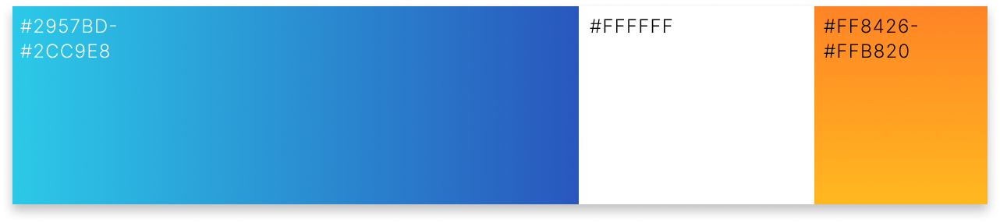

サイズ
Size
1080px × 1080px

Size
1080px × 1080px
Target
主に中小企業の管理職向け。（特に30～50代の課長・部長クラス） 業務が多忙で時間管理に課題があり、経営者から効率化を求められている立場。 デジタルツールに対する理解はあるが、活用に自信がない。
Task
生成AIという名前は知っているが、実際に業務に組み込むまで使い慣れていない人が多い。
Goal
ターゲットに向けてバナーを通して、セミナー参加を促す。また、セミナー参加を通じて生成AIを使った知識やノウハウを提供し、自社のサービスへとつなげる。
Design
生成AIが持つ「革新性」を視覚的に伝えるとともに、ビジネスシーンへの導入ハードルを下げ、より身近に感じてもらえるよう意識してデザインしました。 ビジネスシーンに馴染むブルーのグラデーションに幾何学模様を合わせることで、信頼感と知的な印象をつけました。キャッチコピーにはホワイトとアクセントカラーとしてオレンジを使用し、前向きでエネルギッシュな雰囲気を加えました。文字情報には、日付のフォントをRobotoに変更することでより視認性を上げました。
Range
企画
デザイン
1日
1日
Software
Photoshop / Illustrator
別の作品